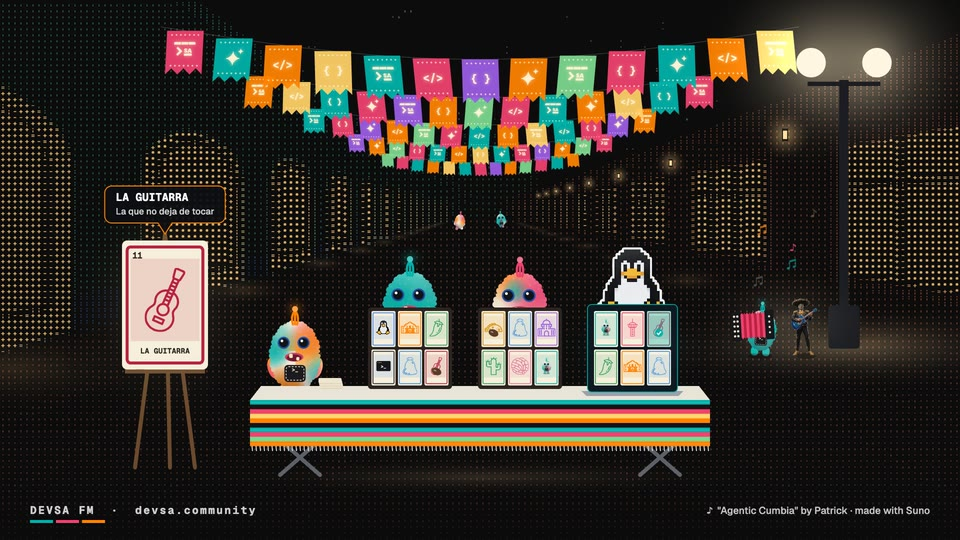
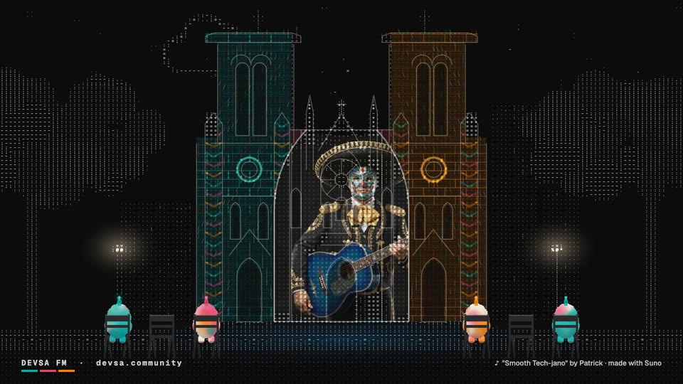
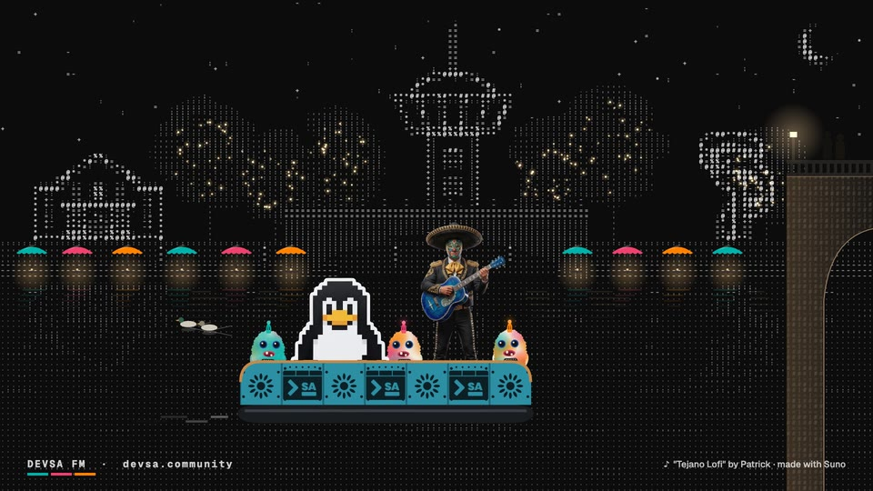
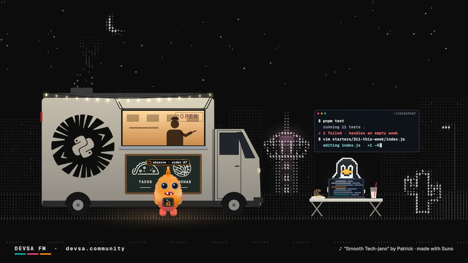

A night in
San Antonio,
in ASCII.
DEVSA's lofi livestream, open source.
Build a scene for it: one HTML file.
github.com/devsanantonio/devsa-fm
DEVSA's lofi livestream, open source.
Build a scene for it: one HTML file.

Lotería
San Fernando
The River Walk
The taco truck